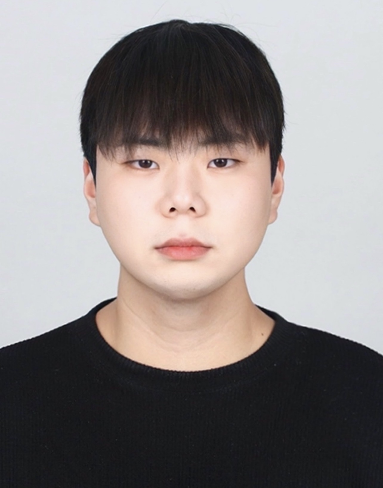
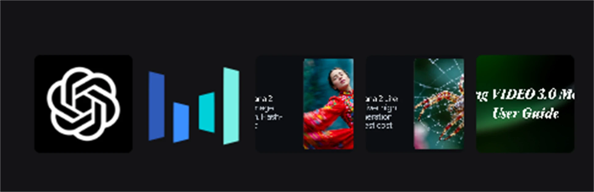
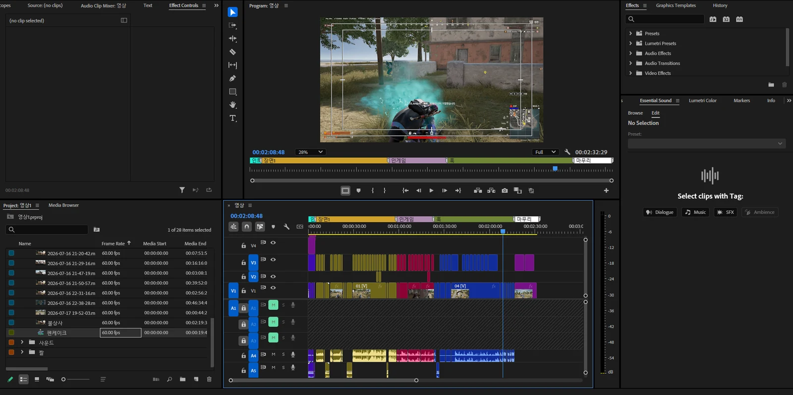
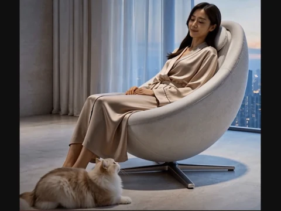
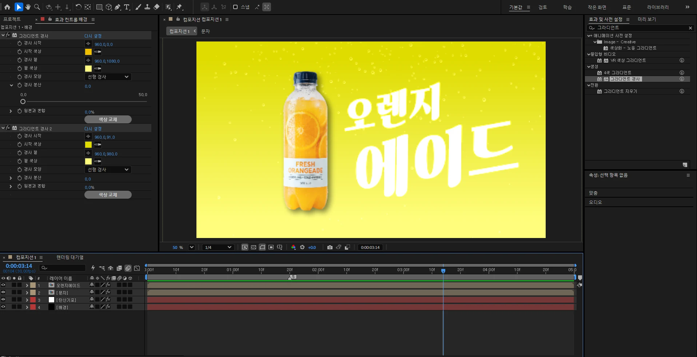

기획 의도와 원본 소스를 먼저 파악하고, 시청자가 이해하기 쉬운 흐름으로 컷·자막·오디오를 정리하는 영상편집 지원자입니다.
Premiere 컷 편집, 자막 톤·리듬, 후킹 구성, Photoshop 보정, AE 기초 모션, 요청사항 반영과 마감 관리.
유튜브 채널 영상, 숏폼, 브랜드·기업 영상, PD 제작 보조 흐름에 맞춰 적응할 수 있습니다.
850시간 제작 과정, 업로드 영상, 공모전·AE 작업, 외주 보정 증빙까지 검토 가능한 자료로 정리했습니다.
RESUME SNAPSHOT
여러 영상 직무에서 확인할 수 있는 핵심 이력과 제작 경험을 정리했습니다.
Candidate ID
Resume Ready

정호성 영상편집 · 제작 보조 흐름 이해 Emailwjdghtjd9@naver.com Phone010-5479-3836 Links유튜브 영상 · 기획안 · 보정 프로필 정호성 · Basic ResumeBasic Resume
컷 편집·자막·후킹·제작 흐름 이해를 자료로 확인할 수 있게 정리했습니다.
유튜브 채널 영상, 숏폼, 브랜드·기업 영상 모두에서 필요한 기본은 원본 이해, 편집 리듬, 검수 태도라고 생각합니다. 준비한 결과물과 기획안을 통해 작업 방식과 성장 가능성을 함께 확인하실 수 있습니다.
Core Pitch
확인 습관과 요청 정리 능력을 편집 완성도로 연결합니다.
제조 현장에서 익힌 작업 기록, 품질 확인, 이상 보고 습관과 포토샵 보정 외주에서 쌓은 상담, 견적, 수정 반영 경험을 함께 가지고 있습니다. 편집에서도 원본 소스 정리, 컷 리듬, 자막 톤, 오디오 상태, 업로드 전 검수를 끝까지 확인하며 마감 안에서 결과물 품질을 관리하겠습니다.
Experience Focus
01
기획 이해
채널 톤, 시청자 흐름, 후킹 포인트, 레퍼런스, 장면별 편집 의도 정리.
02
편집 실행
소스 정리, 컷 압축, 자막 톤, 리듬 조정, Photoshop 보정, After Effects 기초 모션.
03
검수 전달
업로드 전 확인, 수정 요청 반영, 결과물 전달, 다음 콘텐츠 개선안 정리.
사용 가능 툴
Skill Level / 5생성형 AI 활용 툴
AI 영상 제작 보조 툴
영상 콘셉트, 컷 구성, 프롬프트, 레퍼런스 변환, 장면 전환 테스트에 쓰는 AI 도구만 별도로 묶었습니다.
Reference

AI 영상 레퍼런스, 카메라 무브, 숏폼 장면 아이디어 테스트.
영상 콘셉트, 컷 리스트, 자막 카피, AI 영상 프롬프트 정리.
장면별 프롬프트 표, 컷 구성 문서, AI 영상 케이스 데크 정리.
AI 영상 영문 프롬프트, 레퍼런스 컷 요약, 장면별 콘티 초안.
Sora, Seedance 2.0, Nano Banana 2, Nano Banana 2 Lite, Kling Video 3.0으로 이미지-투-비디오, 모션, 조명, 전환 테스트.
CAREER EXPERIENCE
실무에서 맡았던 일과
그 과정에서 만든 자료.
FREELANCE PROOF
숨고 외주 활동으로 증명하는 사진 보정 운영 경험.
Soomgo Outsourcing
사진 편집 및 보정 외주를 요청 확인부터 결과 전달까지 운영했습니다.
작업 난이도와 요청 범위를 먼저 정리하고, 자연스러운 리터칭과 색감 보정, 합성·인물 보정 등 필요한 작업을 안내했습니다. 결과물은 JPG, PNG, PDF 등 목적에 맞는 형식으로 전달하며, 요청을 듣고 정리해 결과물로 완성하는 경험을 쌓았습니다.
- Review
- 5.0 / 5
- Service
- 사진 편집 및 보정
- Scope
- 상담 · 견적 · 보정 · 수정 반영
- Delivery
- JPG · PNG · PDF
SOOMGO FREELANCE PROOF
외주 활동의 서비스 소개, 작업 증빙, 리뷰를 함께 확인하실 수 있습니다.
사진 편집·보정 서비스 소개, 실제 작업 이미지, 고객 리뷰, 진행 방식을 한 번에 볼 수 있도록 정리했습니다. 편집 업무에서도 요청 파악과 수정 반영을 중요하게 생각합니다.
EDITOR FIT
원본 이해, 컷 편집, 자막 톤, 마감 책임.
채널 영상부터 기업 콘텐츠까지, 목적에 맞는 편집 흐름을 고민합니다.
영상편집은 원본을 자르는 작업에서 끝나지 않고, 기획 의도와 시청 흐름을 이해해 장면을 재배열하고 자막과 리듬으로 몰입을 만드는 일이라고 생각합니다. 유튜브 채널 영상은 시청 지속 흐름을, PD 업무는 제작 의도와 현장 맥락을, 기업 영상은 메시지 전달력과 신뢰감을 우선으로 보며 결과물 중심으로 움직이겠습니다.
채널 톤, 브랜드 메시지, 시청자 반응을 읽고 기획 의도가 컷 편집과 자막 톤 안에서 유지되도록 정리합니다.
말투, 리액션, 정보 흐름, 장면 전환 포인트를 읽어 컷 순서와 자막 밀도로 보기 쉬운 흐름을 만듭니다.
사진 보정 의뢰 경험을 통해 상담, 작업 범위 정리, 수정 반영, 결과물 전달까지 관리하며 요청을 끝까지 확인하는 습관을 쌓았습니다.
PRODUCTION SYSTEM
원본 소스를 검토 가능한 결과물로 만드는 편집 순서.
원본 소스, 채널 톤, 영상 목적, 전달해야 할 메시지를 먼저 확인합니다.
첫 장면, 하이라이트, 정보 순서, 필요한 자막 포인트를 정리합니다.
기획 의도와 촬영 흐름을 기준으로 장면을 압축하고 전체 구조를 잡습니다.
자막 톤, 효과음, 오디오 밸런스, 화면 리듬을 맞춰 시청 흐름을 정리합니다.
마감 일정, 수정 포인트, 파일 전달 상태를 끝까지 확인해 결과물을 관리합니다.
CASE DECK
기획안, 결과 영상, 작업 화면으로 보여주는 제작 역량.
Uploaded Case 01
배린이가 미치면 생기는 일
초보 플레이어의 당황, 실수, 과몰입 리액션을 예능형 흐름으로 압축한 게임 콘텐츠입니다. 원본 플레이를 단순 기록으로 두지 않고, 첫 장면의 후킹부터 컷 편집, 자막 톤, 업로드 패키징까지 하나의 시청 경험으로 설계했습니다.
Format게임 예능형 업로드 영상
Role컷 편집 · 자막 방향 · 후킹 구성 · 업로드 전 확인
Point초보자 리액션을 시청 포인트로 전환
 영상 바로 보기
영상 바로 보기
Premiere Timeline Proof
실제 편집 타임라인으로 확인하는 컷 분절, 자막, 오디오 정리.
Premiere Pro 작업 화면에서 장면별 색상 구분, 자막·효과 구간, 오디오 트랙 정리를 확인할 수 있습니다. 결과물만이 아니라 원본 소스를 어떤 흐름으로 구조화했는지 작업 과정을 함께 보여줍니다.
- 장면별 컷 분절
- 자막/효과 구간 정리
- 오디오 트랙 구성
- 업로드 전 검수 흐름

AI Contest Case 02
코웨이 비렉스 AI 영상 광고·숏폼 공모전
AI 생성 컷, 자막, 음악, 추가 이미지 소스를 Premiere 타임라인에서 조합해 30초 광고·숏폼 흐름으로 정리한 공모전 작업입니다. 제품 설명을 길게 나열하기보다 하루 끝의 휴식감이 먼저 보이도록 장면 분위기와 편집 리듬을 설계했습니다.
FormatAI 광고·숏폼 30초
Role기획 · AI 컷 구성 · Premiere 편집 · 자막/사운드 정리
Point제품 기능보다 휴식 감각을 먼저 보여주는 장면 설계

AIkive 참고 영상 보기
AI Edit Timeline
AI 컷, 자막, 음악을 30초 광고 타임라인으로 정리했습니다.
0~15초, 15~30초 영상 구간과 자막·그래픽 레이어, 음악/효과음 트랙을 30초 광고 호흡에 맞게 구성했습니다.
- AI 생성 컷 구성
- 자막/그래픽 레이어
- 음악/효과음 트랙
- 30초 광고 타임라인

After Effects Case 03
탄산음료 오렌지에이드 모션 포스터
제품 이미지를 AI로 제작한 뒤 Photoshop에서 리터칭하고, 어울리는 글꼴을 찾아 After Effects에서 배경 그라디언트, 기포, 타이포그래피 모션을 구성한 개인 아이디어 기반 작업입니다. 제품, 배경, 기포, 타이포 레이어를 분리해 움직임의 리듬을 만들고, “상큼함이 터지는 제품 광고 컷”처럼 보이도록 색감, 레이어, 텍스트 무게를 직접 조율했습니다.
Format제품 모션 포스터 · After Effects 모션 구성
Role아이디어 · AI 제품 제작 · Photoshop 리터칭 · 폰트 탐색 · AE 모션 구성
Point제품 이미지와 한글 타이포를 광고 컷처럼 결합
AE Timeline Proof
AI 제품 컷을 리터칭하고 AE 레이어로 광고형 모션을 구성했습니다.
제품, 문자, 탄산 기포, 배경 레이어를 나눠 5초 안에 읽히는 제품 모션 컷으로 정리했습니다. 밝은 노랑 배경과 흰색 한글 타이포가 겹쳐 보일 때도 제품 실루엣이 먼저 보이도록 대비를 조절했습니다.
- AI 제품 이미지 제작
- Photoshop 리터칭
- 글꼴 탐색과 타이포 배치
- After Effects 레이어/그라디언트/기포 구성

브랜드 요소는 시청 흐름을 해치지 않는 맥락으로 배치합니다.
제품이나 브랜드 정보가 필요한 영상에서도 장면의 몰입을 먼저 고려합니다. 핵심 메시지는 짧고 명확하게 배치하고, 콘텐츠 흐름을 해치지 않는 방식으로 정보 밀도를 조절합니다.
- Use
- 브랜드 맥락 정리 · 정보 밀도 조절 · 자연스러운 콘텐츠 흐름
결과물을 다음 편집 판단으로 연결합니다.
영상의 훅, 정보 전달, 자막 밀도, 오디오, 시청 흐름을 다시 확인해 다음 작업의 개선안으로 정리합니다. 결과물에서 끝내지 않고 다음 제작으로 이어지는 기준을 남기는 편집자가 되고 싶습니다.
- Use
- 성과 회고 · 컷다운 후보 · 다음 영상 액션 리스트
01Hook Select
가장 강한 리액션을 첫 진입점으로 선택
02Comedy Rhythm
실수와 반응이 바로 이어지도록 컷 압축
03Context Trim
보조 정보는 흐름을 해치지 않는 짧은 맥락으로 정리
04Review Loop
반응을 다음 숏폼과 편집 개선안으로 연결
HIRING VIEW
유튜브·PD·기업 영상 직무에서 확인할 수 있는 세부 이력서.
지원 분야영상편집 · 제작 보조(PD 흐름 이해) · 유튜브/숏폼/브랜드·기업 영상
핵심 역량Premiere Pro 컷 편집, 자막 톤·리듬 정리, 후킹 구성, 오디오/검수 흐름 확인, Photoshop 보정·리터칭, After Effects 기초 모션, AI 레퍼런스·프롬프트 정리
역량 준비KD아카데미 850시간 멀티미디어 광고영상콘텐츠 제작 과정 수강 중 · GTQ 그래픽기술자격 1급 · 유튜브 업로드 영상 제작 · 공모전/AI 광고 기획안 · AE 제품 모션 · 사진 보정 외주 경험
업무 태도제조 현장에서 익힌 작업 기록, 품질 확인, 공정 이상 보고 경험을 바탕으로 소스 정리, 파일 관리, 업로드 전 검수, 수정 요청 반영, 일정 준수를 책임 있게 수행
확인 자료제출용 이력서 PDF, 유튜브 업로드 영상, 코웨이 공모전 최종 영상 MP4, 프로젝트별 기획안 DOCX, 탄산음료 AE 모션 작업, 사진 보정 외주 증빙, URL 바로가기
지원 동기 요약지원하는 영상의 목적과 시청자를 먼저 익히고, 원본 소스 정리부터 컷 편집, 자막 톤, 오디오 확인, 업로드 전 검수, 수정 반영까지 이어지는 편집 흐름 안에서 맡은 역할을 성실히 수행하겠습니다.
DOWNLOAD KIT
검토 자료를 직무 흐름에 맞춰 정리했습니다.
이력서, 결과 영상, 기획안, 외주 증빙을 검토 순서에 맞춰 묶었습니다. ZIP 다운로드 후 오른쪽 구성표에서 포함 자료와 작업 맥락을 바로 확인하실 수 있습니다.
ALL FILES 지원 자료 ZIP 다운로드 이력서 · 결과 영상 · 기획안 · 외주 증빙 포함
ZIP STRUCTURE
ZIP 내부 구성
담당자가 확인하기 쉽도록 구성한 ZIP 내부 순서입니다.
01
이력서
지원자 정보와 기본 역량을 먼저 확인
- PDF 정호성_이력서.pdf 제출용 기본 이력서
02
Case 1 · 배린이가 미치면 생기는 일
유튜브 업로드 영상과 예능형 편집 기획안 확인
- 영상 유튜브_업로드_영상_바로가기.url 업로드 영상 바로가기
- 기획안 정호성_배린이가_미치면_생기는_일_기획안.docx 후킹·컷 편집·자막 톤 구성안
- 링크 유튜브_업로드_영상_바로가기.url 링크 폴더용 바로가기
03
Case 2 · 코웨이 비렉스 AI 공모전
AI 영상 기획안과 광고·숏폼 결과물 확인
- 영상 coway-ai-contest-final.mp4 공모전 최종 결과물
- 기획안 정호성_코웨이_비렉스_AI_영상_기획안.docx 30초 구성·Premiere 편집 방향
- 링크 Aikive_기획안_바로가기.url Aikive 기획안 바로가기
04
Case 3 · Effects 탄산음료
After Effects 활용을 보여주는 제품 모션 작업 확인
- 영상 carbonated-drink-ae-portfolio.mp4 After Effects 결과 영상
- 기획안 정호성_탄산음료_오렌지에이드_AE_모션_기획안.docx 제품 모션 콘셉트와 레이어 구성
05
외주 · 숨고
Photoshop 보정 외주 경험과 요청 반영 과정 확인
- 프로필 링크 숨고_프로필_바로가기.url 외주 프로필 바로가기
- 증빙 이미지 soomgo-freelance-page-01.webp · 02.png · 03.png 프로필·작업 페이지 캡처 3장
NEXT STEP
담당 영상의 목적과 완성도를 끝까지 챙기는 편집자가 되겠습니다.
유튜브 채널 영상은 시청 흐름과 업로드 완성도를, PD 업무는 기획 의도와 제작 순서를, 기업 영상은 메시지 전달력과 신뢰감을 중요하게 보겠습니다. 원본 소스 정리, 컷 편집, 자막 톤, 오디오 확인, 수정 반영, 전달 전 검수까지 맡은 과정을 꼼꼼히 기록하고 끝까지 챙기겠습니다. 자비 부담으로 이어가고 있는 850시간 영상 제작 과정과 실제 작업 증빙을 바탕으로, 배운 내용을 현장 속도에 맞게 더 빠르게 끌어올리겠습니다.
CONTACT
CLICK TO COPY
각 항목을 누르면 클립보드에 바로 복사됩니다.
클립보드에 복사되었습니다